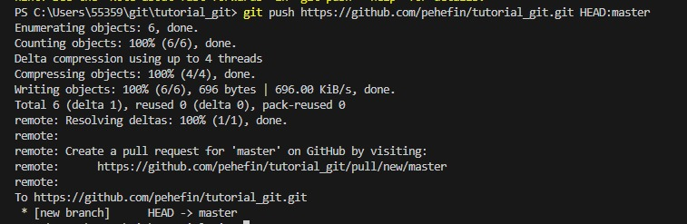

Comando que inicia um repositório que irá guardar o projeto á ser trabalhado. Caso também queira deixar um projeto sob revisão, esse é o primeiro código que você precisa dominar.
Clone
Clona um repositório já existente, incluindo os arquivos, o histórico de commits e branches. É o modo mais regular de se obter uma cópia de trabalho de um repositório central.
Branch
Pode criar, excluir, renomear e listar branches. Também é possível criar diferentes branches de desenvolvimento para que convirjam no mesmo repositório.
Checkout
Caso seja usado seguido de um nome de arquivo, irá descartar todas as mudanças feitas. Porém se usar o nome de um branch, ele navega pelo mesmo branch citado.
Status
Verifica se foram feitas alterações no branch atual que ainda não foram adicionadas ao versionamento.
Diff
É um comando usado para detectar as diferenças entre arquivos ou versões do projeto. Além disso, ele destaca essas alterações com uma granulidade bem melhor ao adicionar o código "--color-words" logo após.
Add
Adiciona arquivos novos, ou modificações de arquivos antigos ao versionamento. demais, ele move as alterações do diretório de trabalho para a área de staging, permitindo a preparação de um snapshot antes de realizar o commit ao histórico oficial.
Commit
Salva as alterações de código que ainda não estão no versionamento. Se usado com o "-a" ele comita todas as mudanças. Se usado com "-m" ele adiciona uma mensagem definida pelo usuário. É importante para guiar algum programador que não sabe que alterações foram feitas.
Push
Adiciona arquivos do repositório Local para o remoto. Apesar de semelhante ao svn commit, ele difere ao adicionar uma série de commits ao invés de apenas um conjunto de alterações.

Pull
Faz o download de ramificação de um repositório remoto e faz a mesclagem imediata na ramificação atual.
Revert
Desfaz um commit de um snapshot. Caso identifique um commit com falhas, é a maneira mais fácil e segura de remover a base de código.
Merge
Faz a união de dois branches em um único só. Antes da ação, o usuário deve estar no branch principal, pois ele será o mantido.
Stash
Arquiva as alterações que o usuário fez na cópia de trabalho durante um período, para mais tarde voltar e fazer a reaplicação.
Rm
É usado para remover arquivos da pasta do projeto. Também é possível remover arquivos do índice de staging e do diretório de trabalho. Porém, só será realizada a remoção caso os arquivos operadores sejam idênticos aos arquivos no Head atual.
Config
Define opções de configuração para a instalação do Git.
Reset
Desfaz as alterações ainda não enviadas a um repositório público.
Remote
Permite gerenciar as conexões do seu repositório atual, com outros repositórios. Pode-se usar com o comando -v para incluir o URL de cada conexão.
Fetch
É usado para baixar conteúdos do repositório remoto, caso o usuário tenha feito o upload de um arquivo diretamente no remoto, e queira traze-lo para o local. Apesar de fazer o download, não integra nada no repositório local, permitindo ao usuário inspecionar as alterações antes de seguir adiante.
Show
Usado para exibir informações sobre objetos git. Dentre as informações mostradas pelo comando estão as tags e os commits.
Help
Exibe um guia dos comandos mais ultilizados no git, e o que cada um faz. Basta colocar o nome do comando que deseja após o "help".
Rebase
Realoca os commits por cima de uma base na "tree" das branches. Também ajuda a evitar commits de merge desnecessários. Pode ser usado com o comando -i, permitindo a alteração (adicionar, excluir ou editar) dos commits durante esse processo.
Blame
Usado para monitorar as alterações do arquivo e o autor delas, inclusive mostrando a hora de cada alteração. Ajuda a responder dúvidas tais quais o que, como e por que o código foi adicionado ao repositório.
Tag
É usado para capturar ou criar um marcador no histórico de versões do arquivo. Pode ser muito útil caso queira marcar um commit específico e importante no código.